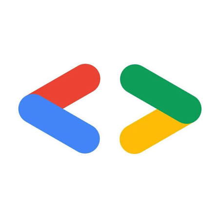
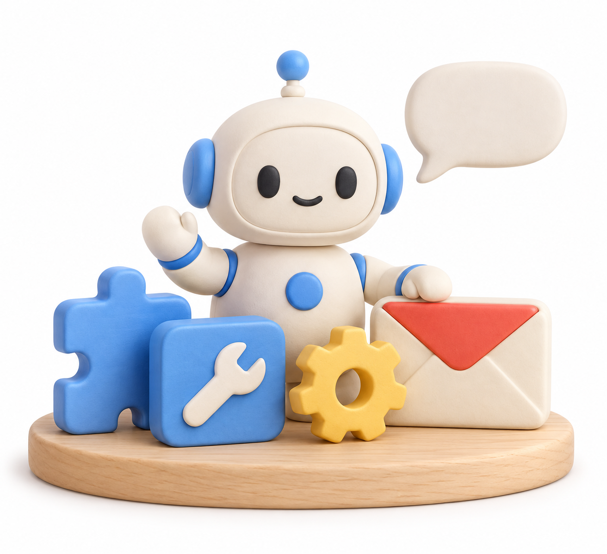

GDG WorkshopA beginner workshop
Your first
inbox agent
Understand Google ADK.
Build an assistant you can use.
No agent experience needed. Python helps for the code exercise.
One inbox job
my attention?
Help me reply.”
The assistant suggests.
You check and approve.
Replies stay as drafts. The app never sends email.
What an agent does
An AI model chooses a step. Your code does the work.
“Find unread emails”
Chooses a tool
Reads the inbox
The AI reads the result.
It answers or takes another step.
A tool is a function the AI can ask the app to run.
Google ADK
A toolkit for
building
AI agents.
You write the rules and tools.
ADK runs the agent.

ADK means Agent Development Kit. It is open source.
AI model and toolkit
Gemini
The AI model reads your request and chooses an answer or tool.
It decides the next step.
ADK
The toolkit connects the AI model to your functions and chat.
It runs those steps.
ADK works with other AI models too. Results depend on the model, rules and tools.
One request through the app
“Summarise my unread emails.”
Sends the request
Runs the agent
Chooses the tool
Returns emails
The AI reads those emails.
You get a summary.
Tool activity shows what the app did. It does not show the AI’s private thoughts.
The agent definition
inbox_agent/agent.py · core pattern
from google.adk.agents import LlmAgent
def create_agent(inbox):
return LlmAgent(
name="inbox_buddy",
model="gemini-flash-latest",
instruction="Read emails using tools.",
tools=[inbox.get_unread_emails],
)AI model
Which AI to use
Rules
How it should work
Tools
Functions it can use
Short example. The real file adds more tools, approval rules and a model setting.
Tools and access
Example: search_emails
A Gemini key allows AI calls.
Google login gives Gmail access.
This uses OAuth.
A Gemini key does not unlock Gmail. Keep keys and login tokens private.
What this chat remembers
short, friendly replies.”
A session is one chat. Restarting the server clears this workshop’s memory.
ADK, Codex and Claude Code
| Question | Google ADK | Codex | Claude Code |
|---|---|---|---|
| What is it? | A toolkit to build your app | A ready AI assistant | A ready AI assistant |
| Common use | An agent for your users | Coding and work tasks | Coding and work tasks |
| Can I extend it? | Your tools, steps and UI | Tools, integrations and SDK | Tools, integrations and SDK |
All can help with more than coding. ADK is not always smarter or cheaper.
Why build your own app?
You also manage login, hosting and costs. Codex or Claude Code can help you build it.
One agent first
One inbox agent.
Several small tools.
Find the emails
A reply or label
Your reply style
ADK can also run a team of agents.
More agents can help when jobs need different rules. They also add work.
Meet Inbox Buddy
Based on SCSP’s ADK email agent. We added a teaching UI and approval steps.
Demo modes
| Mode | What runs? | Inbox | Needs |
|---|---|---|---|
| Guided walkthroughScripted rehearsal | Scripted replies and steps | Fictional | No API key |
| Sample + GeminiReal ADK agent | Real ADK + Gemini | Fictional | Gemini API key |
| Gmail + GeminiOptional integration | ADK + Gemini + Gmail API | Your Gmail | API key + Gmail OAuth |
Change .env and restart to switch modes. Live modes send chat and email text to Gemini.
You approve changes
A draft or label waits for you.
Edit the reply.
Confirm the change.
A draft or a label.
It never sends email.
No send or delete tool.
Email text cannot approve a change.
Gmail uses broad gmail.modify access. This app limits what its tools can do.
More agents to explore
Trip planner ↗
Flights, stays and things to do
Voice calendar ↗
Talk to a Google Calendar agent
Excel charts ↗
Ask for charts with your voice
Browse Awesome ADK Agents ↗ · Each project has its own setup.
Local setup
From the workshop folder
python -m venv .venv
.\.venv\Scripts\python.exe -m pip install -r requirements.txt
.\.venv\Scripts\python.exe app.pyFirst run
Guided walkthrough.
No credentials needed.
Real AI
Add your Gemini key to .env and restart.
AI calls have costs and limits. Gmail needs a separate login setup.
Live demo sequence
- 01“Summarize my inbox”Check the mode and tool activity.
- 02“What needs my attention?”Review the priorities and confirm the Follow up label.
- 03“Draft a reply to the interview email”Check your availability. Edit, then confirm saving.
- 04“Remember: keep replies concise”Open “What Buddy remembers” to check the preference.
AI answers can vary. Check the email, the suggestion and the saved result.
Your inbox.
Your agent.
You decide.
Ask for a reply.
Check it. Edit it. Save the draft.